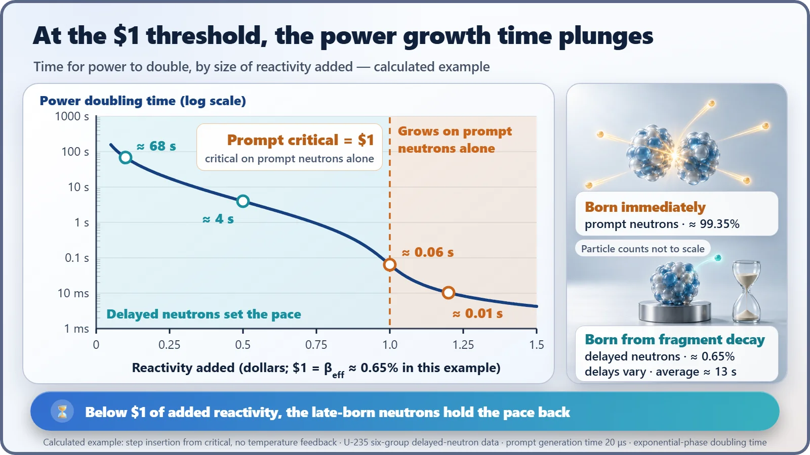
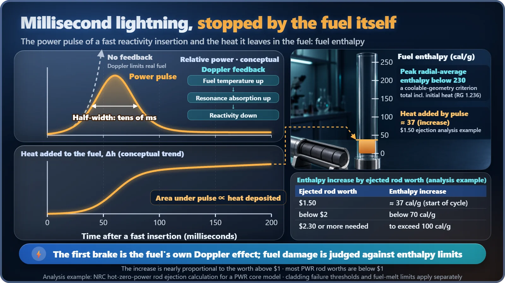

Safety Principles & Accident Analysis · 212
Why Researchers Strike Fuel Rods with Lightning on Purpose — The Line Inside a Reactivity-Initiated Accident
When reactivity is added suddenly, size decides everything: below one dollar the late-born neutrons set the pace; above it, the fuel's own Doppler brake takes over.
A reactivity-initiated accident is the umbrella term for events in which the chain reaction's urge to grow (reactivity) is added unintentionally and quickly, so that power rises sharply. What matters most is size: below about 0.65% (one "dollar"), late-born delayed neutrons set a pace of seconds; above it, power grows on a millisecond scale. Even then, the fuel's own Doppler feedback knocks the pulse down, and the heat it leaves is judged against strict fuel-enthalpy limits.
A lab that strikes fuel with lightning
At a research institute in Ibaraki Prefecture, Japan, there is a rather peculiar reactor. It doesn't make electricity, and most of the time it sits quietly switched off. Then, on experiment days, it strikes a single fuel rod placed inside it with a power "lightning bolt" lasting a few milliseconds. For a few hundredths of the time it takes to blink, the fuel is heated hard, and then it's over. France has a similar test reactor too.[1]
Why would researchers deliberately torment perfectly good fuel? To measure "how far it can hold out." Today's subject, the reactivity-initiated accident, is the accident category that deals with exactly that lightning-fast moment.
Four roads to a sudden surge
Let's start with the term. Reactivity is the chain reaction's urge to grow. At zero, power stays where it is; when it's positive, power grows. The key point is that reactivity is not power itself, but the quantity that sets "how fast power wants to grow."
A reactivity-initiated accident is the umbrella term for events in which that urge is added unintentionally, over a short time, so that power rises sharply.[2] There are several roads to it.[3]
| Road | What happens | Speed |
|---|---|---|
| Rod ejection or rod drop | A control rod leaves the core in an instant: in a PWR the drive housing breaks and the rod is shot out; in a BWR, where rods come up from below, a stuck rod suddenly drops away | Fastest and harshest: the category's flagship |
| Rod withdrawal | A drive-system fault keeps pulling a rod out at its set speed | Relatively slow |
| Boron dilution | The boron dissolved in the cooling water (another neutron absorber) is diluted unintentionally | Usually slow, over minutes |
| Cold water injection | An idle cooling loop is started at the wrong temperature and cold water enters the core; colder water usually slows neutrons better in light water reactors | Moderate |
But there's a question more important than the road taken: how much was added?
0.65%: the magic threshold
Most neutrons from fission fly out immediately, but about 0.65% (for uranium-235) are born late, after a fission fragment undergoes one more decay, on average about 13 seconds later. These are called delayed neutrons, and their share is called β (beta).[4] The key point: they aren't slow-moving neutrons. They are neutrons that are born late.
Think of a relay race. A chain reaction is a relay in which each generation of neutrons hands the baton to the next. Most runners pass the baton the instant they get it, but 0.65% are latecomers who rest a long while before passing it on. If the added urge is smaller than that 0.65%, the next generation can't fill up without waiting for the latecomers, so the whole team's speed is tied to them. But go past 0.65%? Then the on-time runners alone are enough to grow each generation, and there's no reason to wait for the latecomers.
Specialists call this threshold one dollar, and the moment it's crossed is called prompt criticality.

In numbers, the difference is dramatic. In an example calculated with uranium-235 data, adding $0.10 makes power double in about 68 seconds, and $0.50 in about 4 seconds. As you approach $1 the time shrinks steeply, then plunges to 0.06 seconds at $1 and 0.01 seconds at $1.20. Cross the threshold and the unit of time switches to milliseconds. Seconds leave room for protection systems to respond; milliseconds are hard for people or machines to keep up with.
The millisecond lightning is stopped by the fuel itself
So is it game over past $1? Fortunately, this is where the fuel applies its own brake. When the fuel heats up, the uranium-238 nuclei inside it jiggle more vigorously, and the "absorption net" that catches neutrons of certain energies unusually well grows wider. More neutrons get intercepted, and the urge to grow is knocked down in an instant. This is Doppler feedback.
What makes this brake special is that there's no waiting. It doesn't have to wait for heat to pass into the water; it takes hold the very moment the fuel temperature rises. So power shoots up and is knocked back within tens of milliseconds, forming a sharp pulse, and then control rods dropped in by the reactor trip signal finish the event.[1]
The mark this pulse leaves on the fuel is measured as fuel enthalpy: the heat (in calories) stored in each gram of fuel. The lightning is so brief that the heat has no time to escape, so "how much piled up" is the same as "how hot it got."

The US Nuclear Regulatory Commission (NRC) guidance issued in 2020 requires that, to keep the core in a shape that can still be cooled, this value stay below 230 calories per gram, and that the amount of fuel melting be kept very small. The threshold at which the cladding (the metal tube around the fuel) fails is set separately and lower, depending on things like how long the fuel has been burned. These criteria were built on data from the "lightning experiments" at the Japanese and French test reactors mentioned above.[1]
So how much heat actually piles up? In an NRC example calculated with a model of one pressurized water reactor core, even when a $1.50 control rod was ejected, the heat added by the pulse was about 37 calories per gram. Even adding the heat the fuel already held, that falls far short of 230. Interestingly, the increase was almost proportional to the portion above $1. The same study found that most pressurized water reactor control rod worths are below $1 and that exceeding $1.50 is very unlikely.[2]
The "reactivity insertion = explosion" myth
So there's no need to picture this accident as an explosion. Most of the roads add far less than $1, and more slowly, so the protection systems stop them with room to spare. Prompt criticality isn't "the line where a reactor becomes a bomb" either; it is the boundary where the time scale of control changes. The fuel and structure of a commercial reactor cannot work like a nuclear weapon.
In the end, the design's job comes down to two things: keeping the urge that can be added at once well below $1, and making sure the fuel's Doppler brake always acts in the negative (−) direction. That is why reactors manage control rod patterns and insertion limits so carefully.
Three lines from the lightning lab
- A reactivity-initiated accident is the broad category of accidents in which the chain reaction's urge to grow is suddenly increased, by several roads: rod ejection and withdrawal, boron dilution, cold water injection and more.
- Size decides the outcome. Whether it crosses 0.65% ($1) switches the unit of time for power growth from seconds to milliseconds.
- The millisecond pulse is knocked down by the fuel's own Doppler feedback, and its mark is measured as fuel enthalpy and kept under strict limits.
The reason researchers keep striking fuel rods with lightning today is to confirm, to the very end, exactly where that line lies.